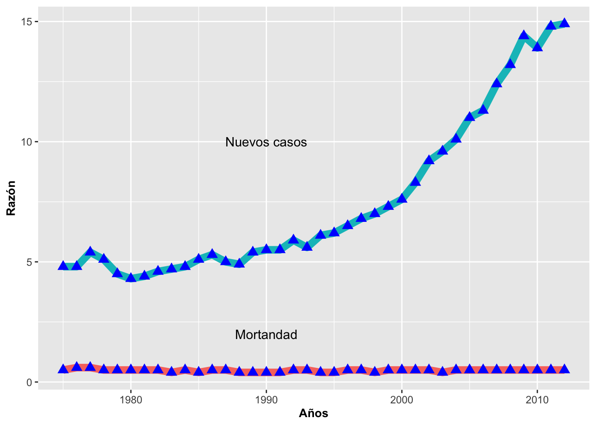

Geom_line
Fecha de la ultima revisión
## [1] "2020-11-30"

Gráficos de línea
Gráfico de línea básico con geom_line
Los gráficos de línea se usan frecuentemente cuando hay una variable de datos continuos ordenada secuencialmente, como las series en tiempo (años, hora, minutos, u otras secuencias). En los ejemplos que veremos a continuación se muestra la relación entre la detección del cáncer de tiroides en EE. UU. entre los años 1975 y 2012, su aumento y el nivel de mortandad.
En la Figura se muestra el cambio en número de casos de cáncer de tiroides por cada 100,000 habitantes. La columna Year, año, es una variable numérica, y típicamente no se gráfica correctamente porque no se toma como numérica automáticamente. Es necesario identificarla como que contiene valores enteros usando la opción as.integer.
En primer lugar, crearemos un nuevo data.frame para agrupar solamente los nuevos casos de cáncer. Para crear un data.frame solamente con esos datos se usa la opción which, con el siguiente procedimiento:
subconjunto del_archivo[which( el_archivo$la_variable == “la variable de interés”),]
Note que la variable de interés es un conjunto de valores en “la_variable” o es una categoría, como en este caso, nuevos casos (o “New Cases”). El símbolo “==” significa “que sea exactamente igual a…”
Aquí vemos parte de los datos originales:
## Year Cases Rate
## 1 1975 New Cases 4.8
## 2 1976 New Cases 4.8
## 3 1977 New Cases 5.4
## 4 1978 New Cases 5.1
## 5 1979 New Cases 4.5
## 6 1980 New Cases 4.3
## 7 1981 New Cases 4.4
## 8 1982 New Cases 4.6
## 9 1983 New Cases 4.7
## 10 1984 New Cases 4.8
## 11 1985 New Cases 5.1
## 12 1986 New Cases 5.3
## 13 1987 New Cases 5.0
## 14 1988 New Cases 4.9
## 15 1989 New Cases 5.4
## 16 1990 New Cases 5.5
## 17 1991 New Cases 5.5
## 18 1992 New Cases 5.9
## 19 1993 New Cases 5.6
## 20 1994 New Cases 6.1
## 21 1995 New Cases 6.2
## 22 1996 New Cases 6.5
## 23 1997 New Cases 6.8
## 24 1998 New Cases 7.0
## 25 1999 New Cases 7.3
## 26 2000 New Cases 7.6
## 27 2001 New Cases 8.3
## 28 2002 New Cases 9.2
## 29 2003 New Cases 9.6
## 30 2004 New Cases 10.1
## 31 2005 New Cases 11.0
## 32 2006 New Cases 11.3
## 33 2007 New Cases 12.4
## 34 2008 New Cases 13.2
## 35 2009 New Cases 14.4
## 36 2010 New Cases 13.9
## 37 2011 New Cases 14.8
## 38 2012 New Cases 14.9
## 39 1975 Deaths_US 0.5
## 40 1976 Deaths_US 0.6
## 41 1977 Deaths_US 0.6
## 42 1978 Deaths_US 0.5
## 43 1979 Deaths_US 0.5
## 44 1980 Deaths_US 0.5
## 45 1981 Deaths_US 0.5
## 46 1982 Deaths_US 0.5
## 47 1983 Deaths_US 0.4
## 48 1984 Deaths_US 0.5
## 49 1985 Deaths_US 0.4
## 50 1986 Deaths_US 0.5
## 51 1987 Deaths_US 0.5
## 52 1988 Deaths_US 0.4
## 53 1989 Deaths_US 0.4
## 54 1990 Deaths_US 0.4
## 55 1991 Deaths_US 0.4
## 56 1992 Deaths_US 0.5
## 57 1993 Deaths_US 0.5
## 58 1994 Deaths_US 0.4
## 59 1995 Deaths_US 0.4
## 60 1996 Deaths_US 0.5
## 61 1997 Deaths_US 0.5
## 62 1998 Deaths_US 0.4
## 63 1999 Deaths_US 0.5
## 64 2000 Deaths_US 0.5
## 65 2001 Deaths_US 0.5
## 66 2002 Deaths_US 0.5
## 67 2003 Deaths_US 0.4
## 68 2004 Deaths_US 0.5
## 69 2005 Deaths_US 0.5
## 70 2006 Deaths_US 0.5
## 71 2007 Deaths_US 0.5
## 72 2008 Deaths_US 0.5
## 73 2009 Deaths_US 0.5
## 74 2010 Deaths_US 0.5
## 75 2011 Deaths_US 0.5
## 76 2012 Deaths_US 0.5## [1] New Cases Deaths_US
## Levels: Deaths_US New Cases| Year | Cases | Rate |
|---|---|---|
| 1975 | New Cases | 4.8 |
| 1976 | New Cases | 4.8 |
| 1977 | New Cases | 5.4 |
| 1978 | New Cases | 5.1 |
| 1979 | New Cases | 4.5 |
| 1980 | New Cases | 4.3 |
El procedimiento para preparar el gráfico de tiroides se presenta a continuación:
ggplot(subTiroide, aes(x=as.integer(Year), y=Rate))+
geom_line(size=1, colour="red")+
annotate("text", x= 1985,y= 9, size= 3,
label="Nuevos casos de \n cancer \n de Tiroides", color="black")+
guides(color="none")+
ylab("Números de nuevos casos\n de cancer de Tiroides \n por 100,000 habitantes")+
xlab("Años")+
theme(axis.title=element_text(size=8,face="italic"))Note que se utilizó la función annonate para escribir información sobre el gráfico. Esta función será discutida con más detalle más adelante.
Gráfico con múltiples líneas con geom_line
A veces es importante comparar dos o más secuencias de datos. Eso se mostrará en la Figura continuando con el mismo ejemplo de tiroides anterior pero esta vez se le añadirá la razón de mortandad por tiroidismo en EEUU en el mismo gráfico. Usando la función group= identifica cual son los grupos, si hubiese más de dos grupos hubiese una linea para cada grupo. Lo que se observa es que aunque hay mucha más gente que es diagnosticada con cáncer de la tiroides, la proporción de gente que muere de este tipo de cáncer es consistente a través del tiempo.
ggplot(Tiroide, aes(x=as.integer(Year),
y=Rate, group=Cases, color=Cases))+
geom_line(size=2)+
annotate("text", x= 1990,y= 8, size=4,
label="Nuevos casos")+
annotate("text", x= 2000,y= 1, size= 4,
label="Mortandad")+
guides(color="none")+
ylab("Números de nuevos casos\n por 100,000 habitantes")+
xlab("Años")+
theme(axis.title=element_text(size=10,face="bold"))La función annonate nos permitió añadir la descripción Mortandad a la línea inferior en forma de texto text a la altura del punto 2000 en el eje de X y a la altura del punto 1 en el eje de Y. De igual manera se hizo con la descripción Nuevos Casos en la coordenada (1990, 8).
Gráfico de líneas con ejes expandidos con geom_line
Muchas veces el intervalo de la escala de los ejes no es el óptimo. Continuando con el ejemplo anterior, modificamos el eje de X en la Figura para que incluya el último año (el último valor de la secuencia en el eje de X). Para ello se indica en el mismo código que el límite de X en el eje se vea a intervalos de 10 años con la función xlim. Note que para expandir el eje de Y se usaría la misma técnica.
ggplot(Tiroide, aes(x=as.integer(Year), y=Rate,
group=Cases, color=Cases))+
geom_line(size=2)+
annotate("text", x= 1990,y= 10, size=4,
label="Nuevos casos")+
annotate("text", x= 1995,y= 1, size= 4,
label="Mortandad")+
guides(color="none")+
ylab("Razón")+
xlab("Años")+
xlim(min(Tiroide$Year-5), max(Tiroide$Year+6))+ # expandir los ejes
theme(axis.title=element_text(size=14,face="bold"))
Gráfico de líneas con los puntos añadidos con geom_line
A veces nos interesa que la línea muestre los puntos que la componen. En el próximo ejemplo, lo mostraremos nuevamente utilizando el ejemplo anterior de tiroides. A continuación el código modificado que muestra ese efecto añadiendo geom_point:
ggplot(Tiroide, aes(x=as.integer(Year), y=Rate,
group=Cases,
color=Cases))+
geom_line(size=1)+
annotate("text", x= 1990,y= 8, size=4,
label="Nuevos casos")+
annotate("text", x= 2000,y= 2, size=4,
label="Mortandad")+
guides(color="none")+
ylab("Razón")+
xlab("Años")+
geom_point(color="black", size=.5)+
theme(axis.title=element_text(size=10,face="bold"))
Los puntos son variados y representado por un número (0 al 24) o un símbolo. Por ejemplo para utilizar los puntos en una gráfica se usa la función
Los simbolos para las gr'aficas de puntos
Gráfico de línea con los puntos en otro estilo con geom_line
Para cambiar el estilo de los puntos en un gráfico de línea se usan los parámetros size, shape, color y fill. Como ya habrá notado, estas alternativas para modificar la apariencia de los gráficos son comunes en casi todos los tipos de gráficos en ggplot2. La forma shape de los puntos predeterminada es un círculo con tamaño de 2, size=2. La opción de fill (para rellenar el punto con un color específico) es aplicable solamente al parámetro shape con valor de 21 al 25.
Un punto importante que hay que observar es que si las líneas y los puntos son de diferentes colores, se tienen que especificar los puntos con geom_point después de la línea con geom_line ya que ggplot funciona con capas de información. En otras palabras, lo que se especifica primero, sale primero.
ggplot(Tiroide, aes(x=as.integer(Year), y=Rate,
group=Cases, color=Cases))+
geom_line(size=3)+
annotate("text", x= 1990, y= 10, label="Nuevos casos")+
annotate("text", x= 1990, y= 2, label="Mortandad")+
guides(color="none")+
ylab("Razón")+
xlab("Años")+
geom_point(shape="o", size=5, colour="blue", fill="yellow")+
theme(axis.title=element_text(size=10,face="bold"))
Ejemplo de modificar el orden de capas
Nuevamente, si las líneas y los puntos son de diferentes colores, se tienen que especificar los puntos geom_point después de la función geom_line. Por ejemplo,se puede ver el resultado cuando geom_point se específica antes de la línea. Los puntos están debajo de la línea, lo que los hace difícil de apreciar. Recordemos entonces que el orden de las funciones puede tener un impacto muy importante en la producción de un gráfico.
ggplot(Tiroide, aes(x=as.integer(Year), y=Rate,
group=Cases, color=Cases))+
geom_point(shape=22, size=4, color="blue", fill="white")+
geom_line(size=3)+
guides(color="none")+
ylab("Razón")+
xlab("Años")+
scale_x_continuous(limits=c(2000, 2010))+
theme(axis.title=element_text(size=10,face="bold"))
Opciones y Parametros de geom_line
ggplot(el archivo de datos, aes(la variables continua))
geom_line(alpha, color, group, fill, size, linetype)
- alpha: la intensidad del color
- color: el color de la línea
- group: identifica los grupos
- linetype: el tipo de línea
- size: el ancho de la línea